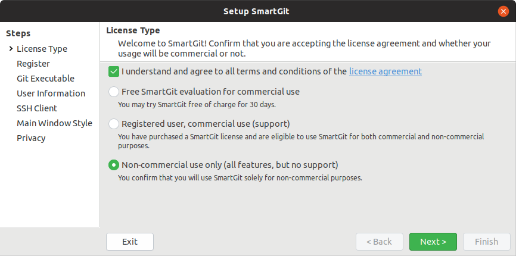

Mobile App Entwicklung
Lektion 1
Vorstellung, Einführung und Setup von Werkzeugen
Dozent
Marco von Ballmoos
- DevOps System Engineer bei Uster Technologies AG
- Partner/Inhaber bei Encodo Systems AG
- BA Mathematics (Hamilton College, USA)
- Unterrichte bei HFU seit 2020
- Erfahrung: Banking, Pharma, iOS/Android
- Hobbies: Radfahren, Wandern, Camping
Vorstellung
Bitte stellt euch kurz vor:
- Name
- Beruf
- Motivation
- Vorkenntnisse / Erfahrung / Technologien allgemein
- Erfahrung mit Mobile-App Entwicklung?
- Ziele für das Modul
- Welches OS und Gerät (iOS/Android)?
Was, wie, wann?

Sprachen
- Deutsch
- Folien
- Unterricht
- Englisch
- Beispiele und Referenzen (z.B. Blogs)
- Gewisse Referenzen sind leider gar nicht—oder nicht immer/schlecht—übersetzt
Planung (DL)
| Zeit | Dauer | Beschreibung |
|---|---|---|
| 17:50 | 01:10 | Unterricht |
| 19:00 | 00:20 | Pause / Essen |
| 19:20 | 01:00 | Unterricht |
| 20:20 | 00:05 | Pause |
| 20:25 | 00:35 | Unterricht |
| 21:00 | 00:10 | Pause |
| 21:10 | 00:30 | Projekt-Arbeit & Fragen |
Planung (PU)
| Zeit | Dauer | Beschreibung |
|---|---|---|
| 17:50 | 01:00 | Unterricht |
| 18:50 | 00:10 | Pause |
| 19:00 | 00:55 | Unterricht |
| 19:55 | 00:10 | Pause |
| 20:05 | 00:55 | Unterricht |
| 21:00 | 00:10 | Pause |
| 21:10 | 00:30 | Projekt-Arbeit & Fragen |
Leistungskontrolle
| Beschreibung | Datum | Anteil |
|---|---|---|
| Prüfung (LK1) | 04.07.2022 | 25% |
| Projekt (MLZ) | 11.07.2022 | 75% |
Für das Runden wird die Aktive Beteiligung im Unterricht berücksichtigt
Prüfung (LK1)
- Word Formular mit schreibbaren Feldern
- Wird am Anfang der Lektion zugeschickt
- 1 Stunde Zeit
- Digital auszufüllen und zurückzusenden
Projekt (MLZ)
- Ist ein eigenes Mobile-App Projekt
- Wird am Ende des Moduls präsentiert
- Beschreibung und Bewertungskriterien
- Bis 30.05.2021
- Bewertungsdokument anschauen
- Idee/Konzept per mail einreichen
- Bis 11.07.2022
- Ausbauen
- Fertigstellen
- Präsentieren
Ziele des Moduls
Das Curriculum
- Basiert auf dem aus Vorjahren
- Wurde letztes Jahr (2021) modernisiert
- Wurde dieses Jahr (2022) ins Deutsche übersetzt
- Lernziele wurden angepasst

Das kommt gut...
Kursmaterialien
Die folgende Repos werden benutzt (auch im Moodle zu finden).
Dokumentationen
Die folgende Online-Referenzen sind sehr nützlich und werden statt einem Buch eingesetzt.
Übersicht Lektionen
- Vorstellung, Einführung und Aufsetzen von Werkzeugen
- MVVM, Bindings, Controls, Debugging
- Dialogs, Styling, IOC, Testing
- Benachrichtigungen (Local/Push/Remote)
- Hybrid-Apps
- Security & Biometrie
- Datenbanken (SQLite); Logging
- LK1; Projektarbeit
- MLZ Präsentationen; Themen nach Wahl
Lektion 1: Themen
- Übersicht Mobile-App Entwicklung
- Xamarin Sample-App aufsetzen
- Einstieg in
- Xamarin Forms
- Cross-Platform
- Navigation
Lektion 2: Themen
- MVVM
- XAML für Forms
- Controls
- Commands
Lektion 3: Themen
- Dialogs
- Styling
- IOC (Inversion of Control)
- Testing
Lektion 4: Themen
- Notifications
- Local
- PUSH/Remote
Lektion 5: Themen
- Hybrid Applikationen
- Interoperabilität mit dem Nativen Teil
- UI-Entwurf
- Ansatz Präsentieren
- Laufendes Beispiel erstellen
Lektion 6: Themen
- Einführung Sicherheit (Hash vs. Encryption, PKI)
- Mobile Sicherheit
- Biometrie
Lektion 7: Themen
- Lokale Datenbank (SQLite)
- Logging
- Telemetrie
- Eigene Projekte ausbauen
- Reviews & Beratung
Lektion 8: Themen
- LK1
- Eigene Projekte ausbauen
- Reviews & Beratung
Lektion 9: Themen
- Projekte präsentieren
- Themen nach Wahl
Fragen?
Lektion 01
Vorstellung, Einführung und Aufsetzen von Werkzeugen
JavaScript 1.0
- Als "LiveScript" in 1995 von Brendan Eich in 10 Tagen für Netscape entwickelt
- Ursprünglich benutzt, um Java Applets in den Netscape Navigator einzubinden
- Deshalb in JavaScript umbenannt
JavaScript 2.0
- 1996 integrierte Internet Explorer 3.0 eine eigene Version namens JScript
- Zeit des ersten Browserkriegs
- Vernachlässigung von Standards, viele Inkompatibilitäten
Standardisierung
- 1997 als ECMA-262 standardisiert
- Browserseitige Schnittstellen vom W3C (World Wide Web Consortium) standardisiert.
- Seit 2015 gab es pro Jahr eine neue Version
- "Evergreen" Browsers werden automatisch aktualisiert (z.B. Chrome, Edge, Opera, Firefox aber nicht Safari)
Vorteile
- Logik im Client spart Roundtrips und Rechenzeit auf dem Server
- Schnellere Antwortzeiten für den Client
Nachteile
- Browserinkompatibilitäten (immer weniger)
- JavaScript kann deaktiviert werden (und nicht alle Browser unterstützen JavaScript)
- Sicherheitsprobleme (fremder Code wird auf dem eigenen Computer ausgeführt, Ausbruch aus der Sandbox)
Erster Blick
- Im Browser Console
- Aus einer HTML-Datei
- Aus einer JS-Datei
- Im System Console (Node)
- Testing (Jest)

Könnt ihr das auch?
Noch nicht...
...aber gleich!
Was benötigen wir?
Werkzeuge
Einführung Trello
- Gratis für nicht kommerzielle Zwecke
- Unterstützt die Projektführung
- Workspaces
- Boards
- Karten
- Spalten/Status
- Aufgaben: Konto, Workspace, Board, und eine Karte erstellen
Wo steht ihr?
- Trello ist eingerichtet
Einführung Git
- Pull vs. Fetch
- Push vs. Commit
- Local vs. Remote
- Merge vs. Rebase
- Working Tree vs. Stage vs. Stash
Fragen?
GitHub Einrichten
- Konto auf GitHub erstellen
- Github Repository erstellen (z.B. "HFU_21H__JAS_20I_app")
- Entweder veröffentlichen
- Oder mich (mvonballmo) einladen
SmartGit
- Gratis für nicht kommerzielle Zwecke
- GUI für Git
- Git kann man auch mit VSC, WebStorm oder Kommandozeile benutzen
- SmartGit ist besser
- Herunterladen und installieren
- Ausführen
SmartGit Lizenz
Letzte Option wählen und bestätigen.
Repo(s) Herunterladen
- Repos:
- In SmartGit,
Repository/Cloneselektieren und das URL eingeben - In SmartGit,
Repository/Cloneselektieren, GitHub als Hosting Provider einrichten, und dein eigenes Projekt selektieren
Wo steht ihr?
- Trello ist eingerichtet
- GitHub ist eingerichtet
- SmartGit ist eingerichtet
- "app" und "doc" Repositories sind bei euch lokal verfügbar
Node & NPM
- Gratis/Open-source
- Laufzeitumgebung und Package Manager für JavaScript
- Herunterladen und installieren
- Im Terminal,
node -vausführen - Im Terminal,
npm -vausführen
Visual Studio Code
- Gratis/Open-source
- Unterstützt Webentwicklung aller Art
- Herunterladen und installieren
- Ausführen
JetBrains WebStorm
Dieser Schritt ist optional, jedoch eine gute Idee sich mit verschiedenen Werkzeugen vertraut zu machen.
- Gratis für nicht kommerzielle Zwecke
- Unterstützt Webentwicklung aller Art
- Herunterladen und installieren
- Lizenz beantragen (evtl. Konto erstellen)
- Ausführen
Wo steht ihr?
- Trello ist eingerichtet
- GitHub ist eingerichtet
- SmartGit ist eingerichtet
- "app" und "doc" Repositories sind lokal verfügbar
- node und npm können ausgeführt werden
- VSC ist installiert
- WebStorm ist installiert
Wir sind bereit!
Bauen wir etwas zusammen!
JS im Browser
- Projekt Ordner in WebStorm oder VSC öffnen
- HTML Datei erstellen
- JS im HTML schreiben
- Im Browser ein Breakpoint setzen und ausführen

Commit und Push
- Änderungen in Git "committen"
- Commit nach GitHub "pushen"
Um ein lokal erstelltes Projekt mit GitHub zu verbinden, siehe How to Push an Existing Project to GitHub.
Wo steht ihr?
- Alle Werkzeuge sind installiert und eingerichtet
- Eure Code ist auf GitHub gesichert
JS mit Jest testing
- Im Terminal ausführen:
npm initnpm install --save-dev jest
- In
package.json, den "test" Script nach "jest" umstellen. module.exportsdefinieren- Test-Datei erstellen mit einem Test
- Siehe Jest "getting started" Doku
Tests ausführen
- Im VSC Terminal,
npm run testausführen - In WebStorm,
npm run testausführen - In WebStorm, rechtsklick auf der Testing-Datei und "Ausführen/Run" selektieren
Tests debuggen
- In VSC oder WebStorm, Breakpoint setzen (links am Rand klicken)
- In VSC,
package.json, "Debug" klicken - Oder in WebStorm, rechtsklick auf der Testing-Datei und "Debuggen" selektieren
- Oder In VSC, JavaScript
Debug Terminal öffnen und danach
npm run testausführen
Wo steht ihr?
- Alle Werkzeuge sind installiert und eingerichtet
- Eure Code ist auf GitHub gesichert
- Ihr könnt JavaScript tests
- schreiben
- ausführen
- debuggen

Können wir jetzt endlich
mehr JavaScript lernen?
Ja! Nächstes mal...